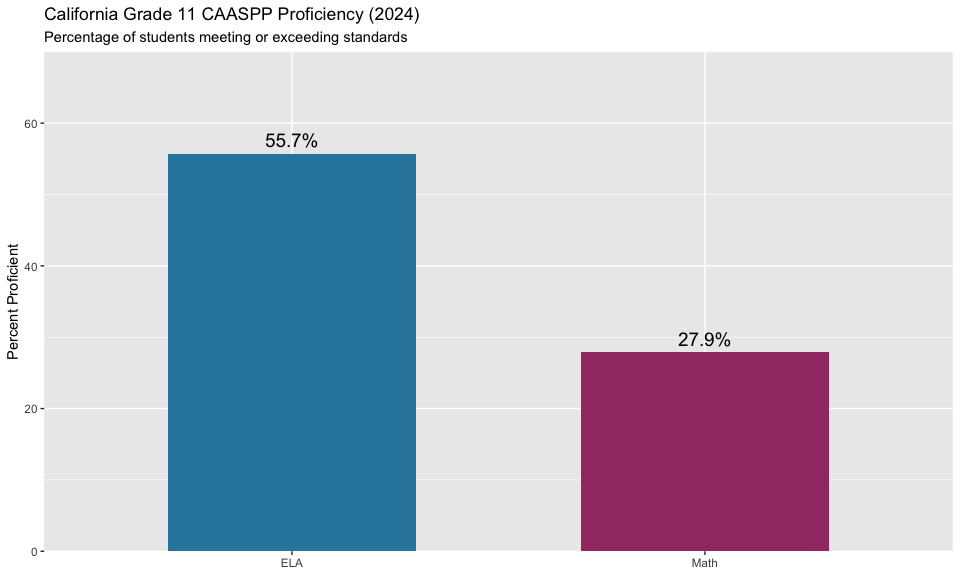
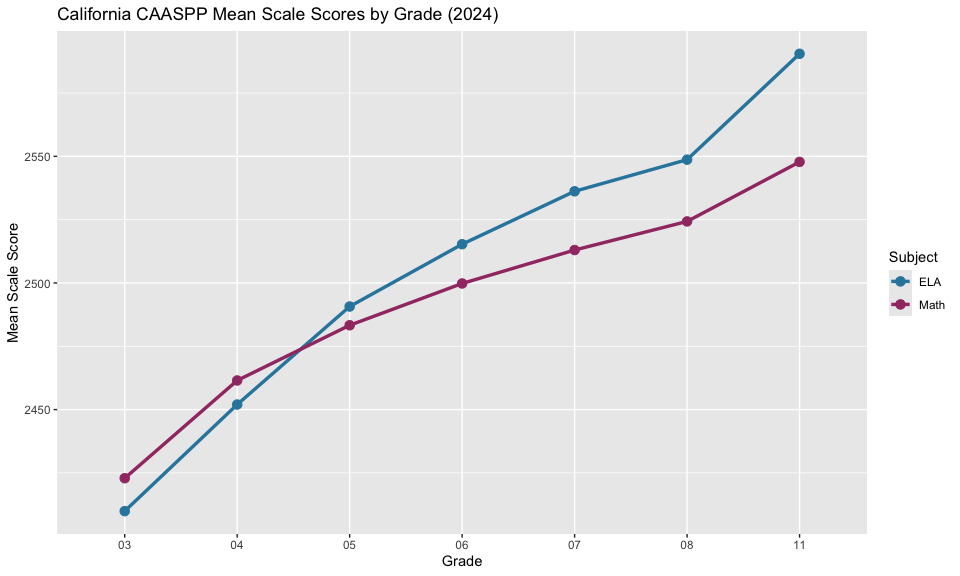
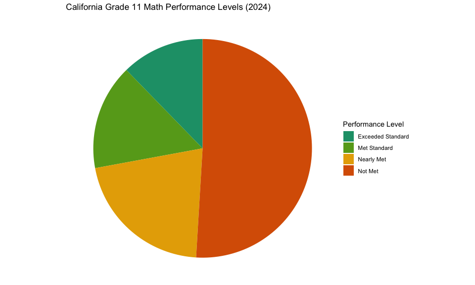

California CAASPP Assessment Data
Source:vignettes/california-assessment.Rmd
california-assessment.Rmd
library(caschooldata)
library(dplyr)
library(tidyr)
library(ggplot2)
# Set theme
theme_set(theme_minimal(base_size = 12))Introduction
California’s CAASPP (California Assessment of Student Performance and
Progress) system includes the Smarter Balanced assessments for English
Language Arts (ELA) and Mathematics. This vignette demonstrates how to
fetch, analyze, and visualize California assessment data using the
caschooldata package.
Available Years: 2015-2019, 2021-2025 (no 2020 due to COVID-19)
Data Source: CAASPP Research Files Portal
1. Fetching Assessment Data
# Fetch 2024 assessment data
assess_2024 <- fetch_assess(2024, tidy = TRUE, use_cache = TRUE)
# View structure
glimpse(assess_2024)## Rows: 1,228,608
## Columns: 15
## $ end_year <int> 2024, 2024, 2024, 2024, 2024, 2024, 2024, 2024, 2024, 20…
## $ cds_code <chr> "00000000000000", "00000000000000", "00000000000000", "0…
## $ county_code <chr> "00", "00", "00", "00", "00", "00", "00", "00", "00", "0…
## $ district_code <chr> "00000", "00000", "00000", "00000", "00000", "00000", "0…
## $ school_code <chr> "0000000", "0000000", "0000000", "0000000", "0000000", "…
## $ agg_level <chr> "T", "T", "T", "T", "T", "T", "T", "T", "T", "T", "T", "…
## $ grade <chr> "03", "03", "03", "03", "03", "03", "03", "03", "03", "0…
## $ subject <chr> "ELA", "ELA", "ELA", "ELA", "ELA", "ELA", "ELA", "ELA", …
## $ test_id <chr> "1", "1", "1", "1", "1", "1", "1", "1", "1", "1", "1", "…
## $ metric_type <chr> "mean_scale_score", "pct_exceeded", "pct_met", "pct_met_…
## $ metric_value <dbl> 2409.90, 23.23, 19.57, 42.80, 22.61, 34.59, 403798.00, 9…
## $ is_state <lgl> TRUE, TRUE, TRUE, TRUE, TRUE, TRUE, TRUE, TRUE, TRUE, TR…
## $ is_county <lgl> FALSE, FALSE, FALSE, FALSE, FALSE, FALSE, FALSE, FALSE, …
## $ is_district <lgl> FALSE, FALSE, FALSE, FALSE, FALSE, FALSE, FALSE, FALSE, …
## $ is_school <lgl> FALSE, FALSE, FALSE, FALSE, FALSE, FALSE, FALSE, FALSE, …
# State-level summary (grade 13 = all grades combined)
state_2024 <- assess_2024 %>%
filter(is_state, grade == "13", metric_type == "pct_met_and_above") %>%
select(subject, metric_value) %>%
arrange(subject)
stopifnot(nrow(state_2024) > 0)
state_2024## California CAASPP Assessment Data (Tidy Format)
## ================================================
##
## Dimensions: 2 rows x 2 columns
##
## Subjects: ELA, Math
##
## # A tibble: 2 × 2
## subject metric_value
## <chr> <dbl>
## 1 ELA 47.0
## 2 Math 35.52. Statewide proficiency: 56% in ELA, 28% in Math for 11th graders
California’s 11th graders showed a dramatic 28-point gap between ELA and Math proficiency in 2024.
# State-level proficiency by subject (Grade 11)
state_g11 <- assess_2024 %>%
filter(is_state, grade == "11", metric_type == "pct_met_and_above") %>%
select(subject, metric_value)
stopifnot(nrow(state_g11) > 0)
state_g11## California CAASPP Assessment Data (Tidy Format)
## ================================================
##
## Dimensions: 2 rows x 2 columns
##
## Subjects: ELA, Math
##
## # A tibble: 2 × 2
## subject metric_value
## <chr> <dbl>
## 1 ELA 55.7
## 2 Math 27.9
ggplot(state_g11, aes(x = subject, y = metric_value, fill = subject)) +
geom_col(width = 0.6) +
geom_text(aes(label = paste0(round(metric_value, 1), "%")),
vjust = -0.5, size = 5) +
labs(
title = "California Grade 11 CAASPP Proficiency (2024)",
subtitle = "Percentage of students meeting or exceeding standards",
x = NULL,
y = "Percent Proficient"
) +
scale_fill_manual(values = c("ELA" = "#2E86AB", "Math" = "#A23B72")) +
scale_y_continuous(limits = c(0, 70), expand = c(0, 0)) +
theme(legend.position = "none")
3. ELA proficiency climbs from 43% in Grade 3 to 56% in Grade 11
ELA proficiency actually increases across grade levels, with 11th graders significantly outperforming 3rd graders – a 13-point gap suggesting cumulative literacy growth.
# ELA proficiency by grade
ela_by_grade <- assess_2024 %>%
filter(is_state, subject == "ELA",
metric_type == "pct_met_and_above",
grade %in% sprintf("%02d", c(3:8, 11))) %>%
select(grade, metric_value) %>%
arrange(grade)
stopifnot(nrow(ela_by_grade) > 0)
print(ela_by_grade, n = Inf)## California CAASPP Assessment Data (Tidy Format)
## ================================================
##
## Dimensions: 7 rows x 2 columns
##
## Grades: 03, 04, 05, 06, 07, 08, 11
##
## # A tibble: 6 × 2
## grade metric_value
## <chr> <dbl>
## 1 03 42.8
## 2 04 43.9
## 3 05 47.4
## 4 06 45.8
## 5 07 47.2
## 6 08 46.0
ggplot(ela_by_grade, aes(x = grade, y = metric_value)) +
geom_col(fill = "#2E86AB") +
geom_text(aes(label = paste0(round(metric_value, 1), "%")),
vjust = -0.5, size = 4) +
labs(
title = "California ELA Proficiency by Grade (2024)",
subtitle = "Percentage meeting or exceeding standards",
x = "Grade",
y = "Percent Proficient"
) +
scale_y_continuous(limits = c(0, 60), expand = c(0, 0))
4. Math proficiency drops dramatically by middle school
Math proficiency peaks in Grade 3-4 at around 45% and falls to under 32% by Grade 8.
# Math proficiency by grade
math_by_grade <- assess_2024 %>%
filter(is_state, subject == "Math",
metric_type == "pct_met_and_above",
grade %in% sprintf("%02d", c(3:8, 11))) %>%
select(grade, metric_value) %>%
arrange(grade)
stopifnot(nrow(math_by_grade) > 0)
print(math_by_grade, n = Inf)## California CAASPP Assessment Data (Tidy Format)
## ================================================
##
## Dimensions: 7 rows x 2 columns
##
## Grades: 03, 04, 05, 06, 07, 08, 11
##
## # A tibble: 6 × 2
## grade metric_value
## <chr> <dbl>
## 1 03 45.6
## 2 04 41.2
## 3 05 35.0
## 4 06 34.3
## 5 07 33.8
## 6 08 31.6
ggplot(math_by_grade, aes(x = grade, y = metric_value)) +
geom_col(fill = "#A23B72") +
geom_text(aes(label = paste0(round(metric_value, 1), "%")),
vjust = -0.5, size = 4) +
labs(
title = "California Math Proficiency by Grade (2024)",
subtitle = "Percentage meeting or exceeding standards",
x = "Grade",
y = "Percent Proficient"
) +
scale_y_continuous(limits = c(0, 55), expand = c(0, 0))
5. Mean scale scores show consistent patterns
Mean scale scores increase with grade level, reflecting expected growth across the K-12 continuum.
# Mean scale scores by grade and subject
mean_scores <- assess_2024 %>%
filter(is_state, metric_type == "mean_scale_score",
grade %in% sprintf("%02d", c(3:8, 11))) %>%
select(grade, subject, metric_value) %>%
arrange(subject, grade)
stopifnot(nrow(mean_scores) > 0)
mean_scores %>%
pivot_wider(names_from = subject, values_from = metric_value)## # A tibble: 7 × 3
## grade ELA Math
## <chr> <dbl> <dbl>
## 1 03 2410. 2423.
## 2 04 2452 2462.
## 3 05 2491. 2483.
## 4 06 2515. 2500.
## 5 07 2536. 2513
## 6 08 2549. 2524.
## 7 11 2590. 2548.
ggplot(mean_scores, aes(x = grade, y = metric_value, color = subject, group = subject)) +
geom_line(size = 1.2) +
geom_point(size = 3) +
labs(
title = "California CAASPP Mean Scale Scores by Grade (2024)",
x = "Grade",
y = "Mean Scale Score",
color = "Subject"
) +
scale_color_manual(values = c("ELA" = "#2E86AB", "Math" = "#A23B72"))
6. Proficiency dropped sharply in 2022, slowly recovering since
After inflated 2021 scores (low participation meant only motivated students tested), the 2022 return to full testing revealed sharp drops. ELA has recovered from 54.8% to 55.7%, while Math inched from 27.0% to 27.9%.
# Fetch multiple years (2019 unavailable due to column parsing issue)
assess_multi <- fetch_assess_multi(c(2021, 2022, 2023, 2024),
tidy = TRUE, use_cache = TRUE)
# State-level trend
state_trend_assess <- assess_multi %>%
filter(is_state, grade == "11", metric_type == "pct_met_and_above") %>%
select(end_year, subject, metric_value) %>%
arrange(subject, end_year)
stopifnot(nrow(state_trend_assess) > 0)
state_trend_assess %>%
pivot_wider(names_from = subject, values_from = metric_value)## # A tibble: 4 × 3
## end_year ELA Math
## <int> <dbl> <dbl>
## 1 2021 59.2 34.4
## 2 2022 54.8 27.0
## 3 2023 55.4 27.4
## 4 2024 55.7 27.9
ggplot(state_trend_assess, aes(x = end_year, y = metric_value, color = subject)) +
geom_line(linewidth = 1.2) +
geom_point(size = 3) +
labs(
title = "California Grade 11 CAASPP Proficiency Trend (2021-2024)",
subtitle = "2021 inflated by low participation; 2022 baseline for recovery",
x = "Year",
y = "Percent Proficient",
color = "Subject"
) +
scale_color_manual(values = c("ELA" = "#2E86AB", "Math" = "#A23B72")) +
scale_x_continuous(breaks = c(2021, 2022, 2023, 2024))
7. ELA slowly recovering since 2022 full-testing baseline
ELA proficiency dropped from 59.2% (2021, low participation) to 54.8% (2022, full testing), then recovered to 55.7% by 2024.
# ELA recovery
ela_recovery <- state_trend_assess %>%
filter(subject == "ELA") %>%
mutate(
change_from_2022 = metric_value - metric_value[end_year == 2022],
change_from_prev = metric_value - lag(metric_value)
)
ela_recovery## California CAASPP Assessment Data (Tidy Format)
## ================================================
##
## Dimensions: 4 rows x 5 columns
##
## School Year: 2021 2022 2023 2024
## Subjects: ELA
##
## # A tibble: 4 × 5
## end_year subject metric_value change_from_2022 change_from_prev
## <int> <chr> <dbl> <dbl> <dbl>
## 1 2021 ELA 59.2 4.44 NA
## 2 2022 ELA 54.8 0 -4.44
## 3 2023 ELA 55.4 0.610 0.610
## 4 2024 ELA 55.7 0.93 0.3208. Math recovery lagged behind ELA
Math proficiency in 2024 is only 0.9 points above the 2022 full-testing baseline, showing a much slower recovery than ELA.
# Math recovery
math_recovery <- state_trend_assess %>%
filter(subject == "Math") %>%
mutate(
change_from_2022 = metric_value - metric_value[end_year == 2022],
change_from_prev = metric_value - lag(metric_value)
)
math_recovery## California CAASPP Assessment Data (Tidy Format)
## ================================================
##
## Dimensions: 4 rows x 5 columns
##
## School Year: 2021 2022 2023 2024
## Subjects: Math
##
## # A tibble: 4 × 5
## end_year subject metric_value change_from_2022 change_from_prev
## <int> <chr> <dbl> <dbl> <dbl>
## 1 2021 Math 34.4 7.39 NA
## 2 2022 Math 27.0 0 -7.39
## 3 2023 Math 27.4 0.390 0.390
## 4 2024 Math 27.9 0.93 0.5409. Over 2.9 million students tested in 2024
California’s CAASPP program is one of the largest state assessments in the country.
# Total students tested
tested_count <- assess_2024 %>%
filter(is_state, grade == "13", metric_type == "n_tested") %>%
select(subject, metric_value)
stopifnot(nrow(tested_count) > 0)
tested_count## California CAASPP Assessment Data (Tidy Format)
## ================================================
##
## Dimensions: 2 rows x 2 columns
##
## Subjects: ELA, Math
##
## # A tibble: 2 × 2
## subject metric_value
## <chr> <dbl>
## 1 ELA 2943257
## 2 Math 296385310. Grade 3 had the highest participation rate
Third grade ELA saw over 403,000 students tested, reflecting high participation in early grades.
# Students tested by grade
tested_by_grade <- assess_2024 %>%
filter(is_state, subject == "ELA", metric_type == "n_tested",
grade %in% sprintf("%02d", c(3:8, 11))) %>%
select(grade, metric_value) %>%
arrange(grade)
stopifnot(nrow(tested_by_grade) > 0)
tested_by_grade## California CAASPP Assessment Data (Tidy Format)
## ================================================
##
## Dimensions: 7 rows x 2 columns
##
## Grades: 03, 04, 05, 06, 07, 08, 11
##
## # A tibble: 6 × 2
## grade metric_value
## <chr> <dbl>
## 1 03 403798
## 2 04 413723
## 3 05 418641
## 4 06 420698
## 5 07 424815
## 6 08 425307
ggplot(tested_by_grade, aes(x = grade, y = metric_value / 1000)) +
geom_col(fill = "#2E86AB") +
labs(
title = "California ELA Students Tested by Grade (2024)",
x = "Grade",
y = "Students Tested (thousands)"
) +
scale_y_continuous(labels = scales::comma)
11. Performance levels show a range of achievement
Students are distributed across four performance levels, with “Standard Not Met” being the largest single category in Math.
# Performance level distribution (Grade 11 Math)
perf_levels <- assess_2024 %>%
filter(is_state, grade == "11", subject == "Math",
metric_type %in% c("pct_exceeded", "pct_met", "pct_nearly_met", "pct_not_met")) %>%
select(metric_type, metric_value) %>%
mutate(
level = case_when(
metric_type == "pct_exceeded" ~ "Exceeded Standard",
metric_type == "pct_met" ~ "Met Standard",
metric_type == "pct_nearly_met" ~ "Nearly Met",
metric_type == "pct_not_met" ~ "Not Met"
),
level = factor(level, levels = c("Exceeded Standard", "Met Standard",
"Nearly Met", "Not Met"))
)
perf_levels## California CAASPP Assessment Data (Tidy Format)
## ================================================
##
## Dimensions: 4 rows x 3 columns
##
##
## Metrics ( 4 types):
## pct_exceeded, pct_met, pct_nearly_met, pct_not_met
##
## # A tibble: 4 × 3
## metric_type metric_value level
## <chr> <dbl> <fct>
## 1 pct_exceeded 12.3 Exceeded Standard
## 2 pct_met 15.6 Met Standard
## 3 pct_nearly_met 21.2 Nearly Met
## 4 pct_not_met 51.0 Not Met
ggplot(perf_levels, aes(x = "", y = metric_value, fill = level)) +
geom_col(width = 1) +
coord_polar(theta = "y") +
labs(
title = "California Grade 11 Math Performance Levels (2024)",
fill = "Performance Level"
) +
theme_void() +
scale_fill_manual(values = c(
"Exceeded Standard" = "#1B9E77",
"Met Standard" = "#66A61E",
"Nearly Met" = "#E6AB02",
"Not Met" = "#D95F02"
))
12. District-level variation is substantial
Top-performing districts have proficiency rates 30+ points higher than state average.
# District proficiency (Grade 11 ELA)
district_ela <- assess_2024 %>%
filter(is_district, grade == "11", subject == "ELA",
metric_type == "pct_met_and_above") %>%
select(cds_code, metric_value) %>%
filter(!is.na(metric_value)) %>%
arrange(desc(metric_value))
# Top 10 districts by CDS code
head(district_ela, 10)## California CAASPP Assessment Data (Tidy Format)
## ================================================
##
## Dimensions: 10 rows x 2 columns
##
##
## # A tibble: 6 × 2
## cds_code metric_value
## <chr> <dbl>
## 1 19649640000000 94.5
## 2 01612750000000 91.7
## 3 49709610000000 89.5
## 4 19646590000000 89.4
## 5 56738740000000 88.8
## 6 27661340000000 87.713. Bottom-performing districts face significant challenges
Some districts have proficiency rates under 20%, highlighting achievement gaps.
# Bottom 10 districts (with at least 100 students)
district_ela_filtered <- assess_2024 %>%
filter(is_district, grade == "11", subject == "ELA") %>%
select(cds_code, metric_type, metric_value) %>%
pivot_wider(names_from = metric_type, values_from = metric_value) %>%
filter(!is.na(pct_met_and_above), n_tested >= 100) %>%
arrange(pct_met_and_above)
head(district_ela_filtered %>% select(cds_code, pct_met_and_above, n_tested), 10)## # A tibble: 10 × 3
## cds_code pct_met_and_above n_tested
## <chr> <dbl> <dbl>
## 1 36103630000000 6.32 174
## 2 37103710000000 8.15 137
## 3 39103970000000 8.94 249
## 4 33103300000000 12.9 303
## 5 24102490000000 13.2 204
## 6 43104390000000 14.0 107
## 7 40104050000000 14.8 115
## 8 10623640000000 19.8 202
## 9 30103060000000 21.6 388
## 10 34674130000000 22.6 15514. Large urban districts represent significant enrollment
The largest districts in California serve hundreds of thousands of students.
# Major district CDS codes
# Los Angeles Unified = 19647330000000
# San Diego Unified = 37683380000000
major_district_codes <- c("19647330000000", "37683380000000",
"10621660000000", "38684780000000") # Fresno, SF
major_district_data <- assess_2024 %>%
filter(is_district, grade == "11",
metric_type %in% c("pct_met_and_above", "n_tested"),
cds_code %in% major_district_codes) %>%
select(cds_code, subject, metric_type, metric_value) %>%
pivot_wider(names_from = metric_type, values_from = metric_value)
major_district_data## # A tibble: 8 × 4
## cds_code subject pct_met_and_above n_tested
## <chr> <chr> <dbl> <dbl>
## 1 10621660000000 ELA 44.8 4041
## 2 10621660000000 Math 14.8 3993
## 3 19647330000000 ELA 49.6 28063
## 4 19647330000000 Math 21.4 27988
## 5 37683380000000 ELA 59.9 5991
## 6 37683380000000 Math 32.2 5961
## 7 38684780000000 ELA 62.6 3117
## 8 38684780000000 Math 42.3 307115. ELA-Math gap widens dramatically from Grade 3 to Grade 11
The ELA advantage over Math proficiency starts near zero in Grade 3 (where Math slightly leads) and balloons to 28 points by Grade 11.
# ELA-Math gap by grade
ela_math_gap <- assess_2024 %>%
filter(is_state, metric_type == "pct_met_and_above",
grade %in% sprintf("%02d", c(3:8, 11))) %>%
select(grade, subject, metric_value) %>%
pivot_wider(names_from = subject, values_from = metric_value) %>%
mutate(gap = ELA - Math)
stopifnot(nrow(ela_math_gap) > 0)
ela_math_gap## # A tibble: 7 × 4
## grade ELA Math gap
## <chr> <dbl> <dbl> <dbl>
## 1 03 42.8 45.6 -2.84
## 2 04 43.9 41.2 2.70
## 3 05 47.4 35.0 12.3
## 4 06 45.8 34.3 11.5
## 5 07 47.2 33.8 13.4
## 6 08 46.0 31.6 14.4
## 7 11 55.7 27.9 27.8
ggplot(ela_math_gap, aes(x = grade, y = gap)) +
geom_col(fill = "#7B68EE") +
geom_text(aes(label = round(gap, 1)),
vjust = ifelse(ela_math_gap$gap >= 0, -0.5, 1.5), size = 3.5) +
geom_hline(yintercept = 0, linetype = "dashed") +
labs(
title = "ELA vs Math Proficiency Gap by Grade (2024)",
subtitle = "Positive values = ELA higher than Math; gap widens dramatically in upper grades",
x = "Grade",
y = "ELA - Math (percentage points)"
) +
scale_y_continuous(limits = c(-5, 32))
Data Notes
- Source: California Department of Education CAASPP Research Files
- Years Available: 2015-2019, 2021-2025 (no 2020 due to COVID-19)
- Grades Tested: 3-8 and 11 for ELA and Mathematics
- Suppression: Groups with fewer than 11 students are not reported
- Performance Levels: Standard Exceeded, Standard Met, Standard Nearly Met, Standard Not Met
Session Info
## R version 4.5.2 (2025-10-31)
## Platform: x86_64-pc-linux-gnu
## Running under: Ubuntu 24.04.3 LTS
##
## Matrix products: default
## BLAS: /usr/lib/x86_64-linux-gnu/openblas-pthread/libblas.so.3
## LAPACK: /usr/lib/x86_64-linux-gnu/openblas-pthread/libopenblasp-r0.3.26.so; LAPACK version 3.12.0
##
## locale:
## [1] LC_CTYPE=C.UTF-8 LC_NUMERIC=C LC_TIME=C.UTF-8
## [4] LC_COLLATE=C.UTF-8 LC_MONETARY=C.UTF-8 LC_MESSAGES=C.UTF-8
## [7] LC_PAPER=C.UTF-8 LC_NAME=C LC_ADDRESS=C
## [10] LC_TELEPHONE=C LC_MEASUREMENT=C.UTF-8 LC_IDENTIFICATION=C
##
## time zone: UTC
## tzcode source: system (glibc)
##
## attached base packages:
## [1] stats graphics grDevices utils datasets methods base
##
## other attached packages:
## [1] ggplot2_4.0.2 tidyr_1.3.2 dplyr_1.2.0 caschooldata_0.1.0
##
## loaded via a namespace (and not attached):
## [1] bit_4.6.0 gtable_0.3.6 jsonlite_2.0.0 crayon_1.5.3
## [5] compiler_4.5.2 tidyselect_1.2.1 parallel_4.5.2 jquerylib_0.1.4
## [9] systemfonts_1.3.1 scales_1.4.0 textshaping_1.0.4 yaml_2.3.12
## [13] fastmap_1.2.0 readr_2.2.0 R6_2.6.1 labeling_0.4.3
## [17] generics_0.1.4 knitr_1.51 tibble_3.3.1 desc_1.4.3
## [21] tzdb_0.5.0 bslib_0.10.0 pillar_1.11.1 RColorBrewer_1.1-3
## [25] rlang_1.1.7 utf8_1.2.6 cachem_1.1.0 xfun_0.56
## [29] fs_1.6.6 sass_0.4.10 S7_0.2.1 bit64_4.6.0-1
## [33] cli_3.6.5 withr_3.0.2 pkgdown_2.2.0 magrittr_2.0.4
## [37] digest_0.6.39 grid_4.5.2 vroom_1.7.0 hms_1.1.4
## [41] rappdirs_0.3.4 lifecycle_1.0.5 vctrs_0.7.1 evaluate_1.0.5
## [45] glue_1.8.0 farver_2.1.2 codetools_0.2-20 ragg_1.5.0
## [49] rmarkdown_2.30 purrr_1.2.1 tools_4.5.2 pkgconfig_2.0.3
## [53] htmltools_0.5.9